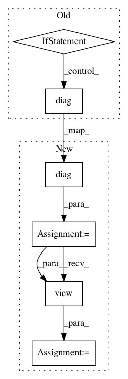

79725f0aeb9a9f93617e291345c0b81add027373,gpytorch/distributions/multivariate_normal.py,_MultivariateNormalBase,variance,#_MultivariateNormalBase#,180
Before Change
def variance(self):
if self.islazy:
// overwrite this since torch MVN uses unbroadcasted_scale_tril for this
if len(self._batch_shape) == 2:
return self.lazy_covariance_matrix.diag().unsqueeze(-1).expand(self._batch_shape + self._event_shape)
else:
return self.lazy_covariance_matrix.diag().expand(self._batch_shape + self._event_shape)
else:
return super().variance
def __add__(self, other):
After Change
def variance(self):
if self.islazy:
// overwrite this since torch MVN uses unbroadcasted_scale_tril for this
diag = self.lazy_covariance_matrix.diag()
diag = diag.view(*diag.shape[:-1], *self._event_shape)
return diag.expand(self._batch_shape + self._event_shape)
else:
return super().variance
In pattern: SUPERPATTERN
Frequency: 3
Non-data size: 6
Instances
Project Name: cornellius-gp/gpytorch
Commit Name: 79725f0aeb9a9f93617e291345c0b81add027373
Time: 2019-04-11
Author: gpleiss@gmail.com
File Name: gpytorch/distributions/multivariate_normal.py
Class Name: _MultivariateNormalBase
Method Name: variance
Project Name: cornellius-gp/gpytorch
Commit Name: 8f27fae607562177d6b840a0c0db2c67a95a88d8
Time: 2019-04-12
Author: gpleiss@gmail.com
File Name: gpytorch/distributions/multivariate_normal.py
Class Name: _MultivariateNormalBase
Method Name: variance
Project Name: cornellius-gp/gpytorch
Commit Name: 1b809b3c9570d617cb26949e40b921b36e826580
Time: 2018-08-31
Author: gpleiss@gmail.com
File Name: gpytorch/lazy/sum_lazy_variable.py
Class Name: SumLazyVariable
Method Name: diag